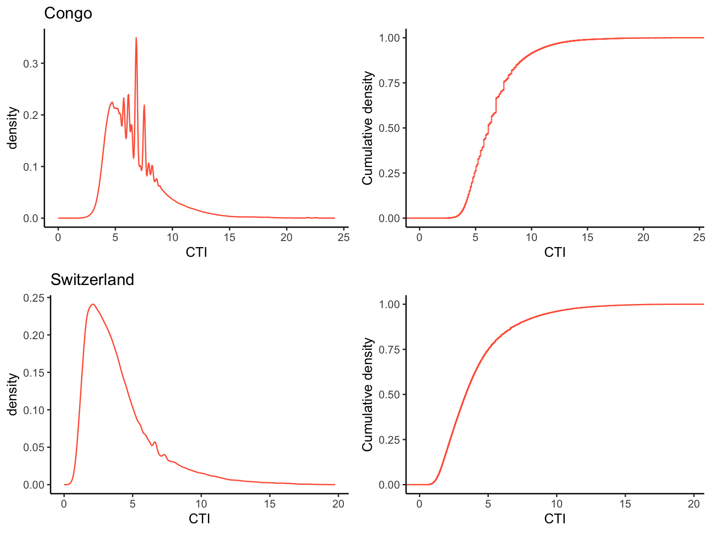
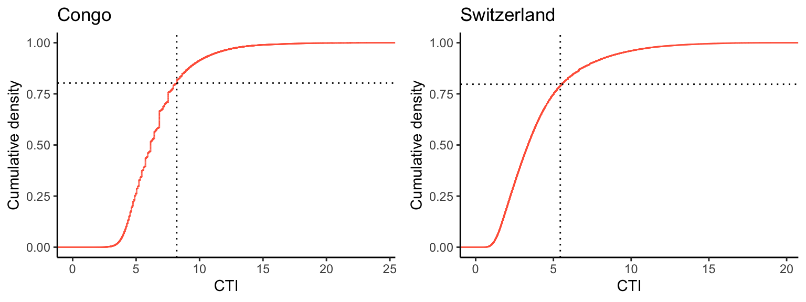
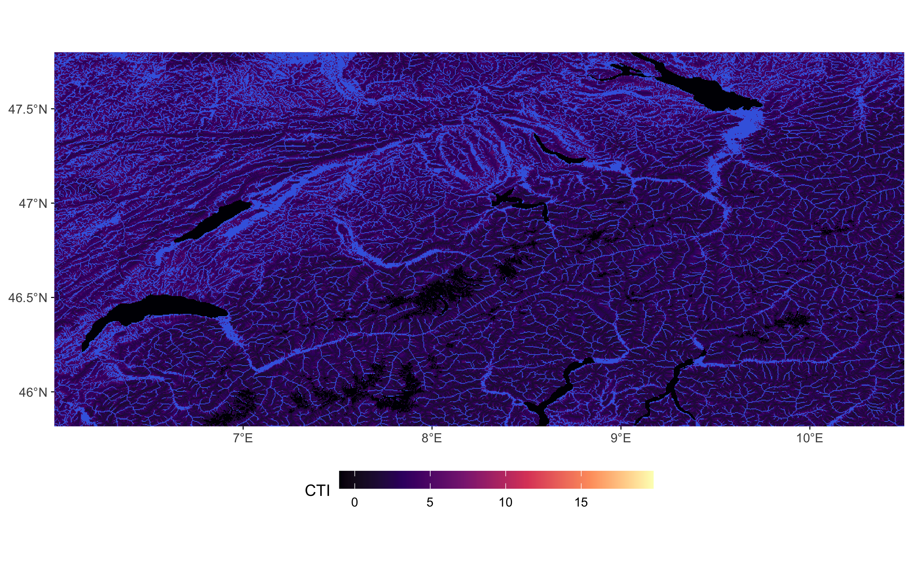
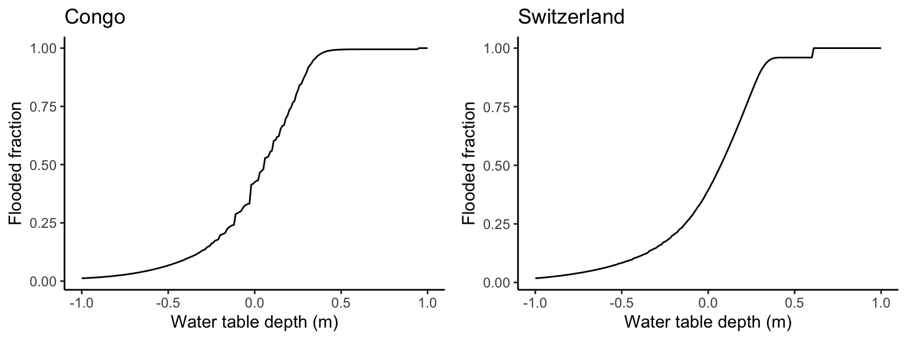
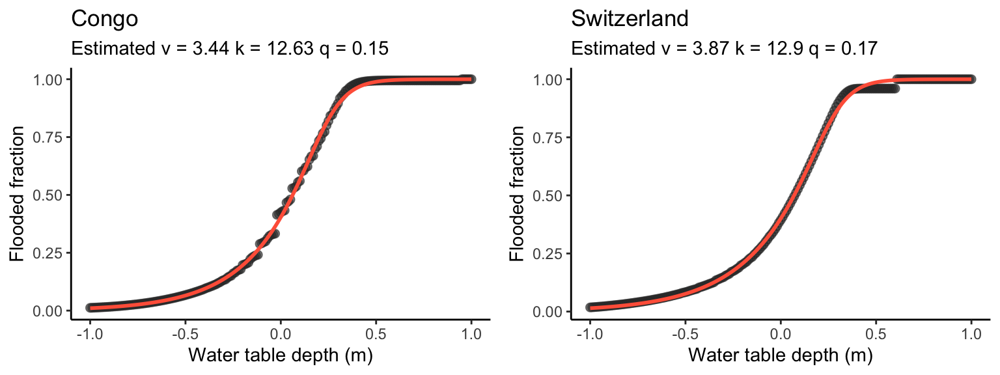

library(optimx)
library(terra)
library(tidyterra)
library(ggplot2)
library(sf)
library(rnaturalearth)
library(rnaturalearthdata)
library(cowplot)
library(ggspatial)
library(dplyr)
library(here)
source(here("R/plot_map.R"))2 Flooded area fraction
2.1 The TOPMODEL
TOPMODEL (Beven and Kirkby 1979) defines the Compound Topography Index (CTI) for measuring subsurface water flow convergence at a given point within a catchment and that point’s tendency for a shallow water table depth and for getting flooded. It is defined for a point \(i\) as: \[ \text{CTI}_i = \ln(a_i / \tan(\beta_i)) \;, \] where \(a_i\) is the total area that drains into/through the respective point, and \(\beta_i\) refers to the local slope. The TOPMODEL thus expresses that lateral flow redistributes water across the landscape and across topographical gradients such that for a certain portion of the catchment, the soil is fully water-saturated (here, considered as flooded). This portion depends on three quantities:
- The topography within the catchment: Flat valley bottoms get flooded first. Hence, the distribution of CTI matters for determining the flooded area fraction for a given catchment water balance.
- The average catchment water balance: The wetter the conditions, the more water is stored in the soil and subsurface, and the higher the larger the catchment’s area fraction for which the soil is at saturation. In Equation 2.1, this is expressed as the water table depth \(\Gamma\).
- The structure of the soil and subsurface, expressed as the rate of decline of transmissivity for water flow with depth. In Equation 2.1, this is represented by the parameter \(M\).
CTI can be derived from a digital elevation model and is provided at topography-resolving spatial resolution. Figure 1 and Figure 2 show the spatial distribution of CTI values at 15 arcsec resolution and is provided by Marthews et al. (2015) . Let’s refer to each pixel in these images as pixel, also using the underscore \(i\).
TOPMODEL defines a critical CTI value \(\text{CTI}_x^\ast\), above which a pixel is flooded: \[ \text{CTI}_x^\ast = \overline{\text{CTI}}_x - M\cdot\Gamma_x \tag{2.1}\] \(\overline{\text{CTI}}_x\) is the catchment-scale mean CTI. (For other quantities, see above.). Note that all these quantities are representative for the catchment-scale, as expressed by the subscript \(x\).
The basic unit of a DGVM is a (coarse-scale) gridcell - not a catchment. In DYPTOP, Equation 2.1 is thus re-interpreted for representing these relations within a gridcell.
To summarise, the distribution of CTI values within a larger spatial domain (e.g., a DGVM gridcell) is key for determining the flooded area fraction. Hence, let’s look at this distribution for our demo regions.
2.2 Distribution of CTI values
Code
# congo
file_path <- here("data/ga2_congo.nc")
rasta_cti <- rast(file_path)
bounding_box <- c(15,22,-3,3) # c(15,20,-2,3) # max bb: c(15,22,-3,3)
rasta_cti_cropped <- crop(rasta_cti, ext(bounding_box))
df_cti_congo <- as.data.frame(rasta_cti_cropped, xy = TRUE, na.rm = TRUE) |>
as_tibble() |>
setNames(c("lon", "lat", "cti"))
gg1 <- df_cti_congo |>
ggplot(aes(cti, ..density..)) +
geom_density(color = "tomato") +
labs(title = "Congo", x = "CTI", y = "density") +
theme_classic() +
xlim(0, NA)
gg2 <- df_cti_congo |>
ggplot(aes(x = cti)) +
stat_ecdf(geom = "step", color = "tomato") + # ECDF plot
labs(x = "CTI",
y = "Cumulative density",
title = " ") +
theme_classic() +
xlim(0, NA)
# switzerland
file_path <- here("data/ga2_switzerland.nc")
bounding_box <- c(xmin = 6, xmax = 10.5, ymin = 45.81799, ymax = 47.80838)
rasta_cti <- rast(file_path)
rasta_cti_cropped <- crop(rasta_cti, ext(bounding_box))
df_cti_switzerland <- as.data.frame(rasta_cti_cropped, xy = TRUE, na.rm = TRUE) |>
as_tibble() |>
setNames(c("lon", "lat", "cti"))
gg3 <- df_cti_switzerland |>
ggplot(aes(cti, ..density..)) +
geom_density(color = "tomato") +
labs(title = "Switzerland", x = "CTI", y = "density") +
theme_classic() +
xlim(0, NA)
gg4 <- df_cti_switzerland |>
ggplot(aes(x = cti)) +
stat_ecdf(geom = "step", color = "tomato") + # ECDF plot
labs(x = "CTI",
y = "Cumulative density",
title = " ") +
theme_classic() +
xlim(0, NA)
cowplot::plot_grid(gg1, gg2, gg3, gg4, ncol = 2)
2.3 Flooded pixels
Let’s determine the critical CTI threshold (\(\mathrm{CTI}_x^\ast\)) above which a pixel is flooded for a given water table depth (here -0.2 m) and for the two demo regions. for the Congo basin, assuming that the extent shown in the figure above corresponds to one catchment.
m_par <- 8.0 # Stocker et al., 2014, Table 1
wtd <- -0.2 # m
calc_cti_crit <- function(vec_cti, wtd, m_par){
mean(vec_cti) - m_par * wtd
}
# Congo
cti_crit_congo <- calc_cti_crit(df_cti_congo$cti, wtd, m_par)
cti_crit_congo[1] 8.199371# switzerland
cti_crit_switzerland <- calc_cti_crit(df_cti_switzerland$cti, wtd, m_par)
cti_crit_switzerland[1] 5.441784Next, let’s determine the fraction of flooded pixels, given \(\mathrm{CTI}_x^\ast\).
calc_fflooded <- function(vec_cti, cti_crit){
length(vec_cti[vec_cti > cti_crit])/length(vec_cti)
}
# Congo
fflooded_congo <- calc_fflooded(df_cti_congo$cti, cti_crit_congo)
fflooded_congo[1] 0.1971743# Switzerland
fflooded_switzerland <- calc_fflooded(df_cti_switzerland$cti, cti_crit_switzerland)
fflooded_switzerland[1] 0.2028614Graphically, this relates to the cumulative density distribution function of CTI within the two domains.
Code
gg1 <- df_cti_congo |>
ggplot(aes(x = cti)) +
stat_ecdf(geom = "step", color = "tomato") + # ECDF plot
geom_vline(xintercept = cti_crit_congo, linetype = "dotted") +
geom_hline(yintercept = 1 - fflooded_congo, linetype = "dotted") +
labs(title = "Congo",
x = "CTI",
y = "Cumulative density") +
theme_classic() +
xlim(0, NA)
gg2 <- df_cti_switzerland |>
ggplot(aes(x = cti)) +
stat_ecdf(geom = "step", color = "tomato") + # ECDF plot
geom_vline(xintercept = cti_crit_switzerland, linetype = "dotted") +
geom_hline(yintercept = 1 - fflooded_switzerland, linetype = "dotted") +
labs(title = "Switzerland",
x = "CTI",
y = "Cumulative density") +
theme_classic() +
xlim(0, NA)
cowplot::plot_grid(gg1, gg2, ncol = 2)
Note that the flooded area fraction corresponds to one minus the value of the cumulative density at \(\mathrm{CTI}_x^\ast\).
To recap, for the water table depth specified above (variable wtd), TOPMODEL assumes that all pixels with a CTI above \(\mathrm{CTI}_x^\ast\) (cti_crit in code) are at saturation. The flooded area fraction is thus determined by the cumulative density distribution of all pixels’ CTI.
The spatial distribution of flooded areas can be visualised by simply masking values above \(\mathrm{CTI}_x^\ast\):
# congo
file_path <- here("data/ga2_congo.nc")
bounding_box <- c(15,22,-3,3)
map_congo <- plot_map(file_path, bounding_box, cti_crit = cti_crit_congo, show_legend = TRUE, show_inset = FALSE)
ggsave(here("book/images/map_congo_flooded.png"), plot = map_congo, width = 8, height = 8)
# switzerland
file_path <- here("data/ga2_switzerland.nc")
bounding_box <- c(xmin = 6, xmax = 10.5, ymin = 45.81799, ymax = 47.80838)
map_switzerland <- plot_map(file_path, bounding_box, cti_crit = cti_crit_switzerland, show_legend = TRUE, show_inset = FALSE)
ggsave(here("book/images/map_switzerland_flooded.png"), plot = map_switzerland, width = 8, height = 5)

2.4 Flooding vs. water table depth
For large-scale modelling, we want to calculate the flooded area fraction of a gridcell as a function of the water table depth. Following the steps above, this corresponds to first calculating the critical CTI as a function of the water table depth and then to determine the flooded area fraction as a function of the critical CTI. To implement this, we can combine the functions calc_cti_crit() and calc_fflooded() to express the flooded area fraction as a function of the gridcell mean water table depth - corresponding to the relation shown in Fig. 2 of Stocker, Spahni, and Joos (2014).
calc_fflooded_wtd <- function(wtd, vec_cti, m_par){
cti_crit <- calc_cti_crit(vec_cti, wtd, m_par)
fflooded <- calc_fflooded(vec_cti, cti_crit)
return(fflooded)
}Code
# Congo
df_wtd_congo <- tibble(wtd = seq(-1, 1, by = 0.01)) |>
rowwise() |>
mutate(fflooded = calc_fflooded_wtd(wtd, df_cti_congo$cti, m_par))
gg1 <- df_wtd_congo |>
ggplot(aes(wtd, fflooded)) +
geom_line() +
theme_classic() +
labs(title = "Congo", x = "Water table depth (m)", y = "Flooded fraction")
# Switzerland
df_wtd_switzerland <- tibble(wtd = seq(-1, 1, by = 0.01)) |>
rowwise() |>
mutate(fflooded = calc_fflooded_wtd(wtd, df_cti_switzerland$cti, m_par))
gg2 <- df_wtd_switzerland |>
ggplot(aes(wtd, fflooded)) +
geom_line() +
theme_classic() +
labs(title = "Switzerland", x = "Water table depth (m)", y = "Flooded fraction")
plot_grid(gg1, gg2, ncol = 2)
The relationship shown in Figure 2.5 is determined from the distribution of CTI values within the respective domains. To determine this, the full information of CTI values at the fine resolution is required. In the context of global modelling, this is prohibitively data-intensive. Therefore, the “empirical” relationship is approximated in DYPTOP by an asymmetric sigmoid function \(\Psi\):
\[ \Psi_x(\Gamma_x) = \left( 1 + v_x\;e^{-k_x\;(\Gamma_x - q_x)} \right)^{-1/v_x} \tag{2.2}\]
This function has just three parameters. When applied, for example, for the domain of the Central Congo Basin, 2.4 mio. CTI values (one for each pixel) are reduced to just three values (one for each parameter). Of course, the explicit spatial information is lost. However, this information is not used for global modelling as it is beyond the spatial resolution and since we are only interested in the flooded gridcell fraction.
The following code implements the assymetric sigmoid function and the fitting of the three parameters, characteristic for the respective domain.
Code
assymmetric_sigmoid <- function(x, par){
( 1 + par["v"] * exp(-par["k"] * (x - par["q"])))^(-1/par["v"])
}
# Generate example data
set.seed(1982) # For reproducibility
# Define the loss function (SSE)
loss_function <- function(params, x, y) {
par <- setNames(params, c("v", "k", "q")) # Name parameters
y_pred <- assymmetric_sigmoid(x, par) # Compute predictions
sum((y - y_pred)^2) # Sum of squared errors
}
# Initial guesses for parameters
init_params <- c(v = 1, k = 0.5, q = 4)
# Congo
# Optimization using optimx
fit_congo <- optimx(
par = init_params,
fn = loss_function,
x = df_wtd_congo$wtd,
y = df_wtd_congo$fflooded,
method = "BFGS"
)
# Extract best parameters
best_params <- coef(fit_congo)[1, ]
v_est_congo <- best_params["v"]
k_est_congo <- best_params["k"]
q_est_congo <- best_params["q"]
# Compute fitted values
df_congo <- data.frame(
x = df_wtd_congo$wtd,
y_obs = df_wtd_congo$fflooded,
y_fit = assymmetric_sigmoid(df_wtd_congo$wtd, best_params)
)
# Plot results
gg1 <- ggplot(df_congo, aes(x = x)) +
geom_point(aes(y = y_obs), color = "grey20", size = 2, alpha = 0.6) + # Observations
geom_line(aes(y = y_fit), color = "tomato", linewidth = 1) + # Fitted curve
labs(title = "Congo",
subtitle = paste("Estimated v =", round(v_est_congo, 2),
"k =", round(k_est_congo, 2),
"q =", round(q_est_congo, 2)),
x = "Water table depth (m)", y = "Flooded fraction") +
theme_classic()
# Switzerland
# Optimization using optimx
fit_switzerland <- optimx(
par = init_params,
fn = loss_function,
x = df_wtd_switzerland$wtd,
y = df_wtd_switzerland$fflooded,
method = "BFGS"
)
# Extract best parameters
best_params <- coef(fit_switzerland)[1, ]
v_est_switzerland <- best_params["v"]
k_est_switzerland <- best_params["k"]
q_est_switzerland <- best_params["q"]
# Compute fitted values
df_switzerland <- data.frame(
x = df_wtd_switzerland$wtd,
y_obs = df_wtd_switzerland$fflooded,
y_fit = assymmetric_sigmoid(df_wtd_switzerland$wtd, best_params)
)
# Plot results
gg2 <- ggplot(df_switzerland, aes(x = x)) +
geom_point(aes(y = y_obs), color = "grey20", size = 2, alpha = 0.6) + # Observations
geom_line(aes(y = y_fit), color = "tomato", linewidth = 1) + # Fitted curve
labs(title = "Switzerland",
subtitle = paste("Estimated v =", round(v_est_switzerland, 2),
"k =", round(k_est_switzerland, 2),
"q =", round(q_est_switzerland, 2)),
x = "Water table depth (m)", y = "Flooded fraction") +
theme_classic()
plot_grid(gg1, gg2, ncol = 2)
The three parameters \(v, k, q\) can be fitted for each coarse-resolution model gridcell. Thus, the relationship between the (gridcell average) water table depth and the flooded gridcell area fraction is specified, and the sigmoid function (Equation 2.2) can be used for dynamically simulating flooding in large scale simulations of the surface water balance (e.g., in a DGVM or a land surface model).